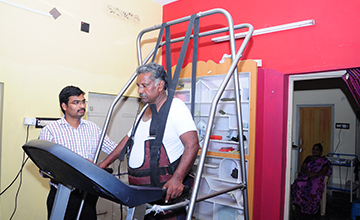
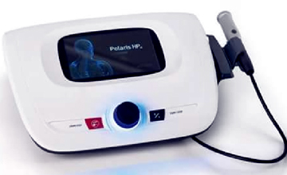
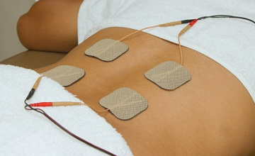
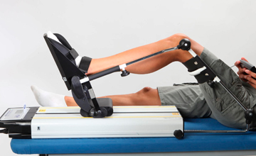
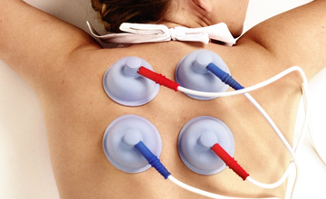
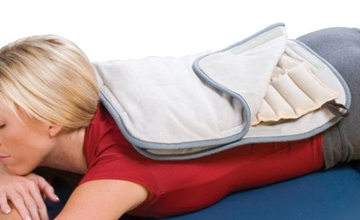
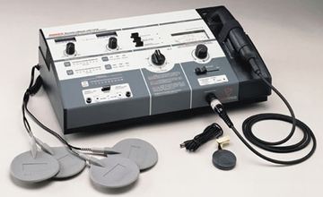

01 We Facilitate
Unweighing System
The Biodex Unweighing System enables partial weight-bearing therapy to be conducted with the assurance of patient comfort and safety, and with convenient access to the patient for manual assistance and observation.
Unlike the simple patient lift devices, Biodex Unweighing System incorporates a dynamic suspension system that accommodates the vertical displacement of the center of gravity that occurs during normal gait. Biodex's patented off-loading mechanism maintains constant force; simply dial the amount to off load.
Clinical GuidelineWhen walking, an individual's center of gravity typically moves through a vertical range from one to four inches, depending on walking speed. The Biodex system accommodates up to four inches of vertical displacement while maintaining a consistent level of unweighing.
Another component of normal gait is pelvic rotation. Two-point suspension systems have a tendency to restrict rotation on the horizontal plane. They respond to pelvic rotation similar to the way a playground swing undulates back to neutral after being twisted. The single-point suspension of the Biodex system allows unrestricted pelvic rotation.
Patients can train for weight-bearing ambulation without compromising proper gait kinematics. Should pelvic stabilization be desired, retention cords can be attached to special attachment rings on the sides of the support vest, secured to the frame, and adjusted for the specific degree of pelvic stabilization.
The ability to allow rotation has other advantages. When training with a treadmill, single-point suspension permits functional pelvic rotation and versatility when walking, side-stepping, retro-walking and turning. With a Biodex Unweighing System, the patient can change direction without repositioning the entire patient support system.
Unlike the simple patient lift devices, Biodex Unweighing System incorporates a dynamic suspension system that accommodates the vertical displacement of the center of gravity that occurs during normal gait. Biodex's patented off-loading mechanism maintains constant force; simply dial the amount to off load.
Clinical GuidelineWhen walking, an individual's center of gravity typically moves through a vertical range from one to four inches, depending on walking speed. The Biodex system accommodates up to four inches of vertical displacement while maintaining a consistent level of unweighing.
Another component of normal gait is pelvic rotation. Two-point suspension systems have a tendency to restrict rotation on the horizontal plane. They respond to pelvic rotation similar to the way a playground swing undulates back to neutral after being twisted. The single-point suspension of the Biodex system allows unrestricted pelvic rotation.
Patients can train for weight-bearing ambulation without compromising proper gait kinematics. Should pelvic stabilization be desired, retention cords can be attached to special attachment rings on the sides of the support vest, secured to the frame, and adjusted for the specific degree of pelvic stabilization.
The ability to allow rotation has other advantages. When training with a treadmill, single-point suspension permits functional pelvic rotation and versatility when walking, side-stepping, retro-walking and turning. With a Biodex Unweighing System, the patient can change direction without repositioning the entire patient support system.

02 We Facilitate
Latest Laser therapy Equipment
What is laser therapy and how does it work?
A laser is essentially a focussed beam of light used to transmit high energy light into a medium. There is some variation in how laser light is delivered therapeutically, it can for example be applied as a single focused beam, or a as a set of beams pulsing at a high rate. Different methods have different efficacies depending on what they’re being used to treat and how, and your physiotherapist will make a recommendation based on their knowledge and experience.
As in other electrotherapies, your tissues have to absorb light energy to achieve any effect. Typically shorter wavelengths of light are more readily absorbed by the darker pigments in your skin like melanin. What a laser does upon delivery is generate heat, disrupt electron flow, and through these two mechanisms begin biochemical changes. These may not sound like therapeutic mechanisms, but they are, targeting the cell membrane to achieve their effects.
The term used to describe the therapeutic biological changes that laser therapy initiates is photobioactivation. The energy from laser therapy is primarily absorbed by the cell membrane, and the physiological state of the cell prior to treatment often determines the amount of energy observed. Cells in a poorer metabolic state often absorb more than neighbours who are in good condition. The effects of laser therapy in terms of the outcomes achieved are generally considered to be an improvement in proliferation and motility, the triggering of immune mechanisms (white blood cells etc.), and an up regulated metabolism.
Laser therapy and physiotherapy
Laser therapy is used to augment traditional physiotherapeutic techniques like massage and exercise. Advancements in technology have made delivering the treatment quick, efficient, and safe, particularly at the lower wavelengths of light used in this capacity. In general terms your physio might recommend laser treatment for chronic pain issues and for wound healing, both of which are areas in which the technique’s efficacy has been proven.
A laser is essentially a focussed beam of light used to transmit high energy light into a medium. There is some variation in how laser light is delivered therapeutically, it can for example be applied as a single focused beam, or a as a set of beams pulsing at a high rate. Different methods have different efficacies depending on what they’re being used to treat and how, and your physiotherapist will make a recommendation based on their knowledge and experience.
As in other electrotherapies, your tissues have to absorb light energy to achieve any effect. Typically shorter wavelengths of light are more readily absorbed by the darker pigments in your skin like melanin. What a laser does upon delivery is generate heat, disrupt electron flow, and through these two mechanisms begin biochemical changes. These may not sound like therapeutic mechanisms, but they are, targeting the cell membrane to achieve their effects.
The term used to describe the therapeutic biological changes that laser therapy initiates is photobioactivation. The energy from laser therapy is primarily absorbed by the cell membrane, and the physiological state of the cell prior to treatment often determines the amount of energy observed. Cells in a poorer metabolic state often absorb more than neighbours who are in good condition. The effects of laser therapy in terms of the outcomes achieved are generally considered to be an improvement in proliferation and motility, the triggering of immune mechanisms (white blood cells etc.), and an up regulated metabolism.
Laser therapy and physiotherapy
Laser therapy is used to augment traditional physiotherapeutic techniques like massage and exercise. Advancements in technology have made delivering the treatment quick, efficient, and safe, particularly at the lower wavelengths of light used in this capacity. In general terms your physio might recommend laser treatment for chronic pain issues and for wound healing, both of which are areas in which the technique’s efficacy has been proven.

03 We Facilitate
TENS.
What is TENS used for?
People use TENS to relieve pain for several different types of illnesses and conditions. They use it most often to treat muscle, joint, or bone problems that occur with illnesses such as osteoarthritis or fibromyalgia, or for conditions such as low back pain, neck pain, tendinitis, or bursitis. People have also used TENS to treat sudden (acute) pain, such as labor pain, and long-lasting (chronic) pain, such as cancer pain.
Although TENS may help relieve pain for some people, its effectiveness has not been proved.
Is TENS safe?
Experts generally consider TENS to be safe, although the machine could cause harm if misused. Have your physical therapist or doctor show you the proper way to use the machine, and follow these instructions carefully.
Always tell your doctor if you are using an alternative therapy or if you are thinking about combining an alternative therapy with your conventional medical treatment. It may not be safe to forgo your conventional medical treatment and rely only on an alternative therapy.
People use TENS to relieve pain for several different types of illnesses and conditions. They use it most often to treat muscle, joint, or bone problems that occur with illnesses such as osteoarthritis or fibromyalgia, or for conditions such as low back pain, neck pain, tendinitis, or bursitis. People have also used TENS to treat sudden (acute) pain, such as labor pain, and long-lasting (chronic) pain, such as cancer pain.
Although TENS may help relieve pain for some people, its effectiveness has not been proved.
Is TENS safe?
Experts generally consider TENS to be safe, although the machine could cause harm if misused. Have your physical therapist or doctor show you the proper way to use the machine, and follow these instructions carefully.
Always tell your doctor if you are using an alternative therapy or if you are thinking about combining an alternative therapy with your conventional medical treatment. It may not be safe to forgo your conventional medical treatment and rely only on an alternative therapy.

04 We Facilitate
Spinal Traction.
What is spinal decompression or traction?
Spinal decompression or traction essentially means the same thing. Traction is the force applied and spinal decompression is the result of that force. It has been used in one form or another for centuries. There are paintings and statues from ancient civilizations showing healing practitioners using their hands to apply traction and help people in pain. Traction can be performed either by hand or using a mechanical traction unit. Unfortunately, many people historically associate traction with a torture device. It should not be confused with that as obviously traction has a positive purpose to help and not harm. Traction either by hand or by a mechanical unit has been used commonly by physiotherapists since the 1940’s.
Traction is a gentle or moderate force that is applied to the spine for the purpose of slightly separating the bones or vertebrae of the spine. The best way to visualize this force to the low back is to imagine yourself hanging by your arms from an overhead bar and letting your legs and lower body relax and pulled by gravity. Or in the case of the neck, if you could hang upside down by your feet, a traction force would be applied to the neck. Of course this is not practical, especially if you are in pain, so that’s where a physiotherapist’s hands or the traction unit are beneficial. This force causes the vertebrae to be slightly separated usually by millimeters. In the low back there are five vertebrae and in the neck there are seven.
How safe and comfortable is it?
It is very safe when used properly. The patient lies on their back for either neck or back traction. Please see the above photos. For neck traction the person lies with their neck cradled and their head resting on the unit. The side pieces are slowly moved inwards in order to cup and cradle the neck. The patient’s head is not locked into position and they can lift their head easily out of the cradle if they wish. The computerized traction unit is then programmed by the physiotherapist starting with a gentle amount of pull through the rope usually between 12 and 18lbs and can be progressed up to 30 lbs. As a reference the human head weighs between 16 and 22 lbs. The patient is given careful instructions and has a safety button they can press any time to stop the traction if they are uncomfortable. The time of treatment varies between 8 and 25 minutes.
Low back traction is set up using a harness around the torso and ribs and one around the hips. The traction unit rope is attached to a harness which is wrapped around the hips. The legs are usually resting on a platform that is height adjustable depending on the desired angle of pull. The rope then pulls through the harness and the hips which tractions the spine because the hips are attached to the spine with strong ligaments and joints. The traction forces used are higher than in the neck because the lower spine requires more force to cause decompression, usually starting at 30-40 lbs. The table separates and splits beneath the lower back as the traction pulls which gives a greater effect.
Occasionally there is some extra pain during traction which may be normal. This needs to be evaluated by the physiotherapist as it depends on the location of pain and the degree. When the treatment is over the pain typically subsides.
How long before you see results?
Usually within two sessions the physiotherapist will be able to tell whether traction is going to be beneficial. If there are signs of progress then usually an average of six to ten sessions is sufficient.
Traction treatment is often used as part of a successful physiotherapy program. It should be viewed as one of the many tools physiotherapists have to help people with neck and back problems move towards a painfree lifestyle. The physiotherapists at Corydon Physiotherapy welcome any further questions on traction treatment.
Spinal decompression or traction essentially means the same thing. Traction is the force applied and spinal decompression is the result of that force. It has been used in one form or another for centuries. There are paintings and statues from ancient civilizations showing healing practitioners using their hands to apply traction and help people in pain. Traction can be performed either by hand or using a mechanical traction unit. Unfortunately, many people historically associate traction with a torture device. It should not be confused with that as obviously traction has a positive purpose to help and not harm. Traction either by hand or by a mechanical unit has been used commonly by physiotherapists since the 1940’s.
Traction is a gentle or moderate force that is applied to the spine for the purpose of slightly separating the bones or vertebrae of the spine. The best way to visualize this force to the low back is to imagine yourself hanging by your arms from an overhead bar and letting your legs and lower body relax and pulled by gravity. Or in the case of the neck, if you could hang upside down by your feet, a traction force would be applied to the neck. Of course this is not practical, especially if you are in pain, so that’s where a physiotherapist’s hands or the traction unit are beneficial. This force causes the vertebrae to be slightly separated usually by millimeters. In the low back there are five vertebrae and in the neck there are seven.
How safe and comfortable is it?
It is very safe when used properly. The patient lies on their back for either neck or back traction. Please see the above photos. For neck traction the person lies with their neck cradled and their head resting on the unit. The side pieces are slowly moved inwards in order to cup and cradle the neck. The patient’s head is not locked into position and they can lift their head easily out of the cradle if they wish. The computerized traction unit is then programmed by the physiotherapist starting with a gentle amount of pull through the rope usually between 12 and 18lbs and can be progressed up to 30 lbs. As a reference the human head weighs between 16 and 22 lbs. The patient is given careful instructions and has a safety button they can press any time to stop the traction if they are uncomfortable. The time of treatment varies between 8 and 25 minutes.
Low back traction is set up using a harness around the torso and ribs and one around the hips. The traction unit rope is attached to a harness which is wrapped around the hips. The legs are usually resting on a platform that is height adjustable depending on the desired angle of pull. The rope then pulls through the harness and the hips which tractions the spine because the hips are attached to the spine with strong ligaments and joints. The traction forces used are higher than in the neck because the lower spine requires more force to cause decompression, usually starting at 30-40 lbs. The table separates and splits beneath the lower back as the traction pulls which gives a greater effect.
Occasionally there is some extra pain during traction which may be normal. This needs to be evaluated by the physiotherapist as it depends on the location of pain and the degree. When the treatment is over the pain typically subsides.
How long before you see results?
Usually within two sessions the physiotherapist will be able to tell whether traction is going to be beneficial. If there are signs of progress then usually an average of six to ten sessions is sufficient.
Traction treatment is often used as part of a successful physiotherapy program. It should be viewed as one of the many tools physiotherapists have to help people with neck and back problems move towards a painfree lifestyle. The physiotherapists at Corydon Physiotherapy welcome any further questions on traction treatment.

05 We Facilitate
Continuous Passive Movement(C.P.M).
Continuous passive motion (CPM) is widely used as part of rehabilitation following knee surgery and there is evidence that its use following total knee replacement can lead to a reduction in both hospital stay and analgesic requirements and an increase in early range of motion. In many centres, the use of CPM machines is limited by the cost of the equipment. We present the results of a pilot study to evaluate a new design of CPM machine (CPMlite) which is inexpensive, portable and quick to set up.
Forty-two patients were randomised to receive CPM therapy following total knee replacement using either a conventional machine or CPMlite. Rehabilitation results (39 patients) showed no statistically significant difference in analgesic requirement, early range of movement or the length of hospital stay between the two groups of patients.
We conclude that this new type of CPM machine compares well with conventional machines, and its significantly lower cost should make CPM more widely available in the post-operative rehabilitation of patients following knee surgery in hospital and at home.
Forty-two patients were randomised to receive CPM therapy following total knee replacement using either a conventional machine or CPMlite. Rehabilitation results (39 patients) showed no statistically significant difference in analgesic requirement, early range of movement or the length of hospital stay between the two groups of patients.
We conclude that this new type of CPM machine compares well with conventional machines, and its significantly lower cost should make CPM more widely available in the post-operative rehabilitation of patients following knee surgery in hospital and at home.

06 We Facilitate
Interferential Therapy(IFT).
Unlike TENS, which delivers intermittent pulses to stimulate surface nerves and block the pain signal, IFT delivers a continuous stimulation deep into the affected tissue. The stimulation both blocks pain and reduces swelling and inflammation which can cause pain.
IFT achieves the deep penetration by using a 4000Hz carrier wave to overcome the skin impedance.
4 pole interferential works by putting two signals into the tissue at slightly different frequencies. Where they cross over, the two signals “interfere” to produce a lower frequency, therapeutic current. In theory, this interference current is generated in the pattern shown in the diagram. In practice, the tissues do not conduct uniformly, so the currents rarely interfere in the expected target area. Therapists commonly use moveable electrodes to “hunt” for the best electrode positions.
This is a real problem for unskilled home use. Many patients find just positioning and connecting up four electrodes a problem, without having to optimise the position.
Some expensive machines use vectored fields. These are a partial solution to this problem as they constantly move the interference zone around the volume between the electrodes, but this means that treatment is only delivered to the affected area for part of the treatment time.
IFT achieves the deep penetration by using a 4000Hz carrier wave to overcome the skin impedance.
4 pole interferential works by putting two signals into the tissue at slightly different frequencies. Where they cross over, the two signals “interfere” to produce a lower frequency, therapeutic current. In theory, this interference current is generated in the pattern shown in the diagram. In practice, the tissues do not conduct uniformly, so the currents rarely interfere in the expected target area. Therapists commonly use moveable electrodes to “hunt” for the best electrode positions.
This is a real problem for unskilled home use. Many patients find just positioning and connecting up four electrodes a problem, without having to optimise the position.
Some expensive machines use vectored fields. These are a partial solution to this problem as they constantly move the interference zone around the volume between the electrodes, but this means that treatment is only delivered to the affected area for part of the treatment time.

07 We Facilitate
Ultra Sound Therapy.
A common misconception with physiotherapy treatments is that they are limited to massage techniques and stretching prescription. This is of course not true, as the modern methods which our physiotherapy team use utilise technology to a great extent. One such method used, is that of Ultrasound therapy. Chartered Physiotherapist Úna Na Mhainin (of our Drumcondra clinic in Dublin) explains how this technique is employed by our physiotherapists. Úna answers some of the more frequently asked questions with regard to the therapy…
What Is Ultrasound Therapy ?
Ultrasound therapy is an electrotherapy which has been used in physiotherapy practices for many years. It is mainly used for its non-thermal effect where high frequency sound waves cause vibrations and movement of cellular fluids.
Proposed benefits of ultrasound therapy include improving the healing rate of certain soft tissues.
It is thought to :
Increase blood flow to an area in order to accelerate the resolution time of the inflammatory process.
Stimulate the production of collagen (the main protein in tendons and ligaments) during tissue healing.
What To Expect A small amount of gel will be applied to the body part to be treated. A transducer (sound head) which is attached to the ultrasound machine will be placed onto the gel and moved in small circles by the physiotherapist. The physiotherapist will set the machine to deliver the appropriate depth and intensity of sound wave required.
You will most likely not feel anything happening throughout the ultrasound treatment. If you do experience discomfort or pain let your physiotherapist know immediately.
How Safe Is It?
Ultrasound therapy is a safe and innocuous treatment technique. However there are situations when ultrasound therapy is not appropriate. Your qualified physiotherapist will ensure that it is an appropriate technique for you and discuss it with you. Certain examples where it would definitely not be used are; over body parts with cancer, in pregnant women and in children.
Does It Work?
Studies have shown that ultrasound therapy can improve symptoms and healing in various soft tissue conditions but the quality of the evidence is often poor. Most recent studies have shown that ultrasound therapy has a high likelihood of a placebo effect and that long term benefits are minimal.
Due to the lack of substantial evidence for significant benefits ultrasound may be used in conjunction with other more research-supported manual hands-on techniques (based on our physiotherapists assessment of you). Our physiotherapists will decide based on the injury or condition that you are encountering. If you would like to be treated by Úna in Drumcondra be sure to mention her name when you are booking an appointment!
What Is Ultrasound Therapy ?
Ultrasound therapy is an electrotherapy which has been used in physiotherapy practices for many years. It is mainly used for its non-thermal effect where high frequency sound waves cause vibrations and movement of cellular fluids.
Proposed benefits of ultrasound therapy include improving the healing rate of certain soft tissues.
It is thought to :
Increase blood flow to an area in order to accelerate the resolution time of the inflammatory process.
Stimulate the production of collagen (the main protein in tendons and ligaments) during tissue healing.
What To Expect A small amount of gel will be applied to the body part to be treated. A transducer (sound head) which is attached to the ultrasound machine will be placed onto the gel and moved in small circles by the physiotherapist. The physiotherapist will set the machine to deliver the appropriate depth and intensity of sound wave required.
You will most likely not feel anything happening throughout the ultrasound treatment. If you do experience discomfort or pain let your physiotherapist know immediately.
How Safe Is It?
Ultrasound therapy is a safe and innocuous treatment technique. However there are situations when ultrasound therapy is not appropriate. Your qualified physiotherapist will ensure that it is an appropriate technique for you and discuss it with you. Certain examples where it would definitely not be used are; over body parts with cancer, in pregnant women and in children.
Does It Work?
Studies have shown that ultrasound therapy can improve symptoms and healing in various soft tissue conditions but the quality of the evidence is often poor. Most recent studies have shown that ultrasound therapy has a high likelihood of a placebo effect and that long term benefits are minimal.
Due to the lack of substantial evidence for significant benefits ultrasound may be used in conjunction with other more research-supported manual hands-on techniques (based on our physiotherapists assessment of you). Our physiotherapists will decide based on the injury or condition that you are encountering. If you would like to be treated by Úna in Drumcondra be sure to mention her name when you are booking an appointment!

08 We Facilitate
Hydrocollator Therapy.
HPT is a form of Moist Heat Therapy (MHT) by virtue of using hot packs to help raise the temperature of soft tissues directly below the surface of the skin. This process enlarges blood vessels below the surface, relaxing tissues and temporarily relieving painful symptoms. This also increases the circulation of the blood and relaxing of muscles which is very helpful before and/or after chiropractic adjustments, therapeutic exercises and other treatments.

09 We Facilitate
Muscle Stimulator.
Including the transcutaneos electrical nerve stimulation (TENS) techniques, muscular electro-stimulation has been used for a long time in physiotherapy in the assistance in working with many different pathologies. Although in this section we will speak specifically about the electro-therapy techniques which we can apply with an electro-stimulator, we will also refer to other physical therapies which are efficient in the recovery from bone, muscular, tendon and ligament pathologies.
In rehabilitation, muscular stimulation is used for treatment of various pathologies which affect the tissues which we just mentioned as, when applied correctly, electro-therapy a series of benefits on the treated area, because of its multiple possible applications. Amongst them we stress the following: increase in trophism of the area, improvement of local circulation, drainage, analgesia, decontractation, reduction in inflammation, better oxygenation of the tissues on which it is applied, and decrease in fibrous adherences. All of these benefits can be obtained easily and almost without any risk to the patient. We are going to look at the possible applications according to the various pathologies in specific cases.
In rehabilitation, muscular stimulation is used for treatment of various pathologies which affect the tissues which we just mentioned as, when applied correctly, electro-therapy a series of benefits on the treated area, because of its multiple possible applications. Amongst them we stress the following: increase in trophism of the area, improvement of local circulation, drainage, analgesia, decontractation, reduction in inflammation, better oxygenation of the tissues on which it is applied, and decrease in fibrous adherences. All of these benefits can be obtained easily and almost without any risk to the patient. We are going to look at the possible applications according to the various pathologies in specific cases.